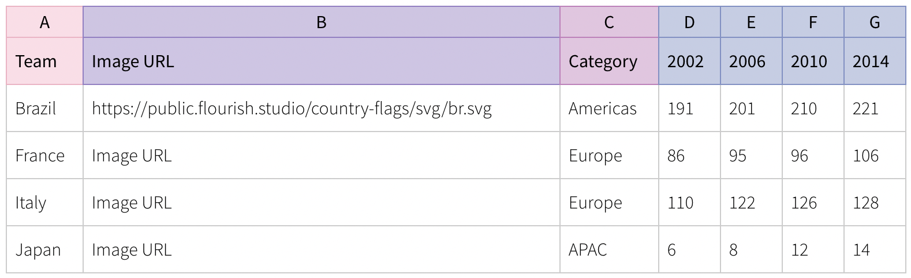
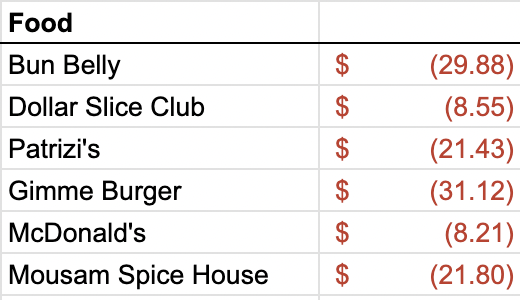

Responsible Boredom
When I started graduate school five and a half years ago, I decided it would be prudent to keep track of all my expenses. I know there are plenty of financial tools out there with all sorts of fancy features, including ones you can connect to your bank account and automatically track, categorize, and budget, all packed into cute little animated charts. But where’s the fun in that? I didn’t want some app popping up every month telling me I spent 13% more on “hospitality” or some other such category that means nothing to me. I wanted to do the heavy lifting of staring at and transcribing every expense, big and small, and doing the data analysis myself.
Luckily, I find data entry to be quite soothing. So I started a Google Sheet, and at the end of every month I sat down to document every expense and every source of income, all categorized to my pleasure. And as time went on and the amount of data grew, I started to do so some broader data analyses, including how expenses in each category evolved over time, how my monthly savings flatlined as a function of inflation, how my investments rose and fell, and which categories were the best targets for trying to cut back and save a little more.
And I’ve kept this up, every single month from September 2018 until now. And while it’s true that the mundane data entry has some therapeutic utility for me, it’s hard to not feel a little bored with it after a while. I started wondering if there were any new angles to this I could exploit for some intellectual stimulation. That’s when I discovered bar chart races.
You may have seen these things on YouTube, especially if you’re a bit of a history nerd like me. They’re great for showing how quantities change over time in competition with each other, especially quantities that tend to only increase, such as city populations, social media usage, and the richest people in the world. I always wondered how people made these things, so I looked into it and discovered Flourish.
Racing Restaurants… but how?
I decided making a bar chart race for the money I’ve spent eating out at different restaurants over the years would be fun. However, it would take a little bit of work to get my financial data in the correct format requested by Flourish. The example they have on their website is:

The image URL and categories are optional, but the important bit is how the subsequent columns show the accumulated totals for each “team” over time. In my case, the teams need to be restaurants, the “time” columns need to be months, and the values in those columns need to be the cumulative amount of money I’ve spent at each restaurant by that point in time. In my finance spreadsheet, all of this information is pretty spread out. I have a separate sheet for every month, and each one has a bunch of extra information in it but includes something like:

Thankfully, this bit of the sheet is in the same place across all months, so by identifying the correct data range, I can extract them all using the same script. But accessing the sheets efficiently is a bit of an issue. I considered downloading the whole thing as an Excel document, but that seemed clunky, both because the conversion to Excel screws up some of the formatting and because I wouldn’t be able to easily update the bar chart race as I add to the Google Sheet over time. I concluded that this could be an opportunity to learn how to use the Google Sheets API, so that is the route I went instead.
The setup, as it turned out, is pretty simple. You can go to the Google Developers Console, create a new project, and then enable the Google Sheets API from the API Library in the sidebar. Then, you create some credentials via the following steps:
- In the project dashboard, navigate to the “Credentials” page.
- Click “Create Credentials” and select “Service Account”
- Follow the steps to set up the service account and assign it a “Viewer” role
- In the service account details page, go to “Keys” and create a new key of the “JSON” type. This will download a JSON file with the credentials you’ll need to access the API, so save it somewhere secure.
- Finally, go to the Google Sheet you want to access, click “Share”, and add the email address associated with the service account, which you can find in the JSON file you just downloaded.
And that’s pretty much it for the API setup. Now you just have to install the Google Client Library in whatever Python environment you want to work in, which you can do via
pip install --upgrade google-api-python-client google-auth-httplib2 google-auth-oauthlibWith that, we’re ready to start coding.
The Code
From a code perspective, this project turned out to be quite simple in the end. It was mostly an exercise in dataframe manipulation in pandas, and of course it required learning how to use the Sheets API credentials that we just set up. The code for setting up the imports and the permissions etc. is:
from googleapiclient.discovery import build
from google.oauth2.service_account import Credentials
import pandas as pd
from tqdm import tqdm
SCOPES = ['https://www.googleapis.com/auth/spreadsheets.readonly']
SERVICE_ACCOUNT_FILE = '/path/to/credentials.json'
creds = None
creds = Credentials.from_service_account_file(SERVICE_ACCOUNT_FILE, scopes=SCOPES)
SPREADSHEET_ID = 'your_spreadsheet_id' # this can be found in the url of your Google Sheets document
service = build('sheets', 'v4', credentials=creds)Now, service gives us access to the appropriate Google Sheets document associated with SPREADSHEET_ID. The rest of the code is short enough that I’ll just paste it in its entirety here:
def process_month(month, last_month, master_df):
# get data from the sheet
sheet = service.spreadsheets()
result = sheet.values().get(
spreadsheetId=SPREADSHEET_ID,
range=f'{month}!E4:F' # E4:F is the range of data for my "Food" category as pictured above
).execute()
values = result.get('values', [])
# clean up the data
values_df = pd.DataFrame(values)
values_df.columns = values_df.iloc[0]
values_df = values_df[1:]
values_df.rename(columns={'Food': 'Place', None: 'Amount'}, inplace=True)
values_df = values_df.dropna(subset=['Amount'])
values_df.Amount = values_df.Amount.apply(lambda acnt: float(acnt[4:-1]))
# collapse repeats
values_df = values_df.groupby('Place')['Amount'].sum().reset_index()
# merge the values to the master_df and add the new month
merged_df = pd.merge(master_df, values_df, on='Place', how='outer')
merged_df.fillna(0, inplace=True)
if last_month is None:
last_month = 'Initial_Amount'
merged_df[month] = merged_df[last_month] + merged_df['Amount']
merged_df.drop(['Amount'], axis=1, inplace=True)
return merged_df
# Note: the names of the sheets in my document consist of the abbreviated month and then the year, so "Sep. 18", "Mar. 22", "Aug. 23", e.g.
month_names = ['Jan.', 'Feb.', 'Mar.', 'Apr.', 'May', 'Jun.', 'Jul.', 'Aug.', 'Sep.', 'Oct.', 'Nov.', 'Dec.']
years = ['18', '19', '20', '21', '22', '23']
months = []
for year in years:
for month in month_names:
months.append(f'{month} {year}')
# trim the months to represent the range [Sep. 18, Nov. 23] and prepend a None for easier indexing
months = months[8:-1]
months.insert(0, None)
master_df = pd.DataFrame({'Place': [], 'Initial_Amount': []})
for i,month in tqdm(enumerate(months[1:]), total=len(months)):
master_df = process_month(month, months[i], master_df)
master_df.drop(['Initial_Amount'], axis=1, inplace=True)
master_df.to_csv('food.csv', index=False)Most of the code is self-explanatory, but I’ll quickly go over what the process_month function is doing, step-by-step:
- We extract the values from the appropriate range in the sheet specified by
month. - The values are returned as a list of lists, which isn’t very useful for data manipulation, so we convert it to a
pandasdataframe. - We clean up the data in a few simple ways:
- Identify the first row as column names and cut those entries from the data.
- Rename the columns to “Place” and “Amount” for convenience (and because the numerial column name was previously
None). - Drop all the entries that have
NaNorNone. This handles a corner case where there might be some empty cells getting read. - Use the
applyfunction to convert values in the “Amount” column from accounting strings like"$ (4.33)"to floats like4.33.
- Now for the real work. We use
groupbyto collapse repeated place names, while summing the corresponding amounts to give the total amount spent that month at that place. We then merge the new dataframe with the providedmaster_df(which is initially empty when the function is first called) and replace the missingNaNentries with zeros. - Finally, we add a new column to the merged dataframe representing the current month, whose value is the sum of whatever was there last month and whatever is found in “Amount” this month. We then drop the “Amount” column and return the merged dataframe as the new master.
Ok let’s take a breath. The beauty of pandas is that all of that can be done with just a few lines of code, and it works beautifully. Every time we call process month, it will return a dataframe that has added any new restaurants that didn’t appear before, as well as a new column for the given month whose values are the cumulative totals spent at each restaurant. As is often the case with pandas, finding the steps that work best is a matter of playing around with some toy dataframes and seeing what happens. The rest of the code is just setting up the month names (which are the sheet names in the document), iterating through the months to get the final master dataframe, and then saving the result to a .csv format that we can upload into Flourish.
The Result
After all of that, we get the final result. I hope it’s as pleasing to watch for you as it is for me. It probably isn’t, but whatever, I learned some stuff, and that’s the whole idea at the end of the day.